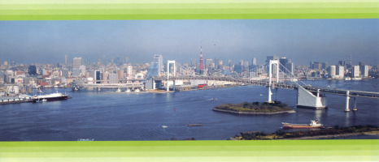
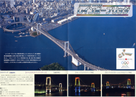
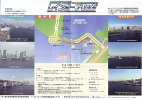
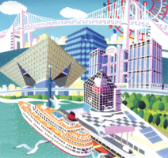
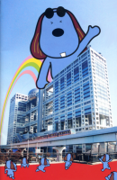
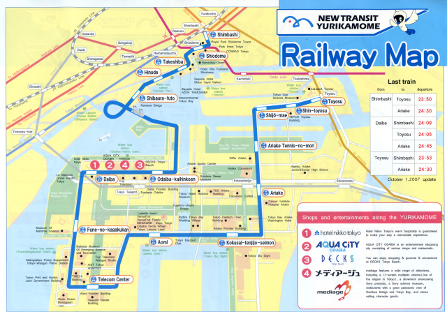

Info & Media
If you somehow found yourself at this site without knowing anything about Digimon or Odaiba, you
might be a little confused. Even those who have only seen the dubbed version of the show may have
missed a lot of details, so I'm here to bring you up to speed.

What IS Odaiba??
To start with the basics, Odaiba is a man-made island in the middle of Tōkyō Bay, in southest Tōkyō,
Japan. A product of the 80s bubble economy, the land reclaimed from Tokyo Bay was mostly used for
industrial purposes when in 1994, it was rezoned and plans were laid to turn it into a futuristic area
called Tōkyō Teleport Town. The World Exposition Tokyo was planned to bring life to the area in 1996.
But a change in Tōkyō metropolitan government lead to the Expo being scrapped, and for a while there was
concern that the reclaimed bay area was going to be a huge financial dead zone.




Even without the Expo, however, the area continued to develop as a tourism and leisure spot. The "Tōkyō
Teleport Town" name didn't stick, nor did the "Rainbow Town" name that was later decided on, and people
continued to refer to the area at large as simply "Odaiba." FujiTV moved its headquarters there just
prior to the premiere of the Digimon series, and a DECKS Tokyo Beach opened the floodgates for
shopping centres. Hotel Nikko Tōkyō opened in '96. Since then the island has continued to progress as a
leisure area, with less than 20 apartment buildings, just one school of each level, a handful of hotels
and thousands of square metres of parks.
Odaiba has been the setting for a few movies produced by Fuji Television, whose building is probably the
most recognizable landmark on the island. It also appears in TV and anime, though rarely depicted in
such incredible detail as it is in Digimon Adventure.
Wait, what?
Produced in 1999 by Fuji TV and set in the same year, Digimon Adventure is an anime that was
marketed heavily to children overseas, enjoying popularity in France, Canada, the United States, Spain,
Italy, Germany, Portugal, and many other places. The concept was originally inspired by the Digimon
Virtual Pet, released in 1997 by Bandai. It would become an animated series, as well as spawning several
comics, dozens of video games, movies and more. A "monster" craze had overwhelmed Japan since virtual
pets like Tamagotchi had come onto the market, and Pokemon was at the height of its popularity as
well.  Digimon Adventure, as many people who did not give the show a chance never learned, combined the
monster-collecting premise with incredibly well-developed characters, an engaging plot, solid cast
friendships and, very importantly, a firm sense of fantasy being grounded in reality. There was no
"hammerspace" present; the children went without dinner or slept on the ground as they wandered in the
Digital World, and their absences were missed by their families, who appeared and some of whom played
supporting roles. The children all lived in Odaiba, an area in the Minato district of Tōkyō, and shared
a common past: They had all once lived in the Hikarigaoka suburb in the northwest end of the city, where
they witnessed an attack three years before by a wild Digimon.
Digimon Adventure, as many people who did not give the show a chance never learned, combined the
monster-collecting premise with incredibly well-developed characters, an engaging plot, solid cast
friendships and, very importantly, a firm sense of fantasy being grounded in reality. There was no
"hammerspace" present; the children went without dinner or slept on the ground as they wandered in the
Digital World, and their absences were missed by their families, who appeared and some of whom played
supporting roles. The children all lived in Odaiba, an area in the Minato district of Tōkyō, and shared
a common past: They had all once lived in the Hikarigaoka suburb in the northwest end of the city, where
they witnessed an attack three years before by a wild Digimon.
The depiction of Odaiba in the show (both Adventure and its sequel, Digimon Adventure 02)
was incredibly detailed and true to life. More than 20 real-life places in Odaiba were depicted onscreen
over the course of these two seasons, as well as accurate representations of other locations in Tōkyō,
like Shibuya, Shinjuku, Hikarigaoka, Mita, Mount Aso, and others. The writers and animators were
obviously very knowledgeable about the area, to the point where even the time needed to walk or run from
place to place is accurate. The only locations not completely detailed and made obvious were the homes
of the children, presumably for privacy reasons.
So this site...?
This site is a collection of photos, alongside anime screenshots, that you can use to compare the
real-life versions to the digital ones. All the areas are marked on the map, for anyone wishing to take
their own trip. On August 1st (the anniversary of the day the Chosen first went to the Digital World, in
1999) Japanese fans still gather at the Dai-san Daiba park, where in 02 the original eight
related their story to their successors. This event, like the episode it mimics, is called Odaiba
Memorial and is the inspiration for the site name.
All the photos on the site were taken personally by me, between 2008 and 2010. If you wish to view my own
thoughts on visiting each spot, those are available in the log I post after each
trip. The site will never be perfectly complete, as the area is perpetually growing and changing.
Someday, like the landmarks of Bishoujo Senshi Sailor Moon in nearby Azabu-Juuban, many of these
places may change beyond recognition or be torn down - some already
have. Before that, though, there are many more Odaiba Memorials to see through!



Back to the map!
 Digimon Adventure, as many people who did not give the show a chance never learned, combined the
monster-collecting premise with incredibly well-developed characters, an engaging plot, solid cast
friendships and, very importantly, a firm sense of fantasy being grounded in reality. There was no
"hammerspace" present; the children went without dinner or slept on the ground as they wandered in the
Digital World, and their absences were missed by their families, who appeared and some of whom played
supporting roles. The children all lived in Odaiba, an area in the Minato district of Tōkyō, and shared
a common past: They had all once lived in the Hikarigaoka suburb in the northwest end of the city, where
they witnessed an attack three years before by a wild Digimon.
Digimon Adventure, as many people who did not give the show a chance never learned, combined the
monster-collecting premise with incredibly well-developed characters, an engaging plot, solid cast
friendships and, very importantly, a firm sense of fantasy being grounded in reality. There was no
"hammerspace" present; the children went without dinner or slept on the ground as they wandered in the
Digital World, and their absences were missed by their families, who appeared and some of whom played
supporting roles. The children all lived in Odaiba, an area in the Minato district of Tōkyō, and shared
a common past: They had all once lived in the Hikarigaoka suburb in the northwest end of the city, where
they witnessed an attack three years before by a wild Digimon.


{kind=link}
{kind=link}
{kind=link}
{kind=link}
{kind=link}